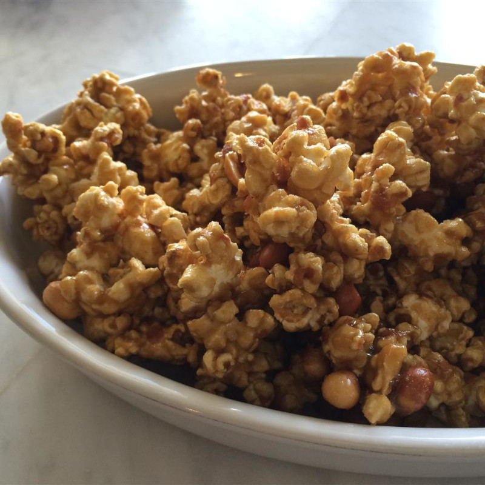

Clone of a Cracker Jack

This peanutty, caramelly popcorn recipe tastes close to the original
It's very easy to prepare at home and makes great gifts! For a thicker coating of caramel, reduce the popped popcorn to 10 cups.
Ingredients
- 11 cups popped popcorn
- 01 cup Spanish peanuts
- 1 ¼ cups dark brown sugar
- 10 tablespoons unsalted butter, cut into pieces
- ¼ cup dark corn syrup
- 1 teaspoon kosher salt
Steps
- Preheat oven to 120 degrees C.
- Spread popcorn in the bottom of a large, deep roasting pan. Sprinkle peanuts over the popcorn.
- Combine brown sugar, butter, corn syrup, and salt together in a saucepan over medium-high heat. Cook, whisking constantly, until sugar and butter are melted and sauce is thick and caramelized, 2 to 3 minutes.
- pour caramel sauce over the popcorn and peanuts and stir to coat popcorn and peanuts completely, scooping any peanuts and caramel that fall to the bottom of the roasting pan.
- Bake in the preheated oven, stirring occasionally, until caramel and popcorn are crisped, about 45 minutes. Turn popcorn out in a single layer on a sheet of parchament paper to cool completely.